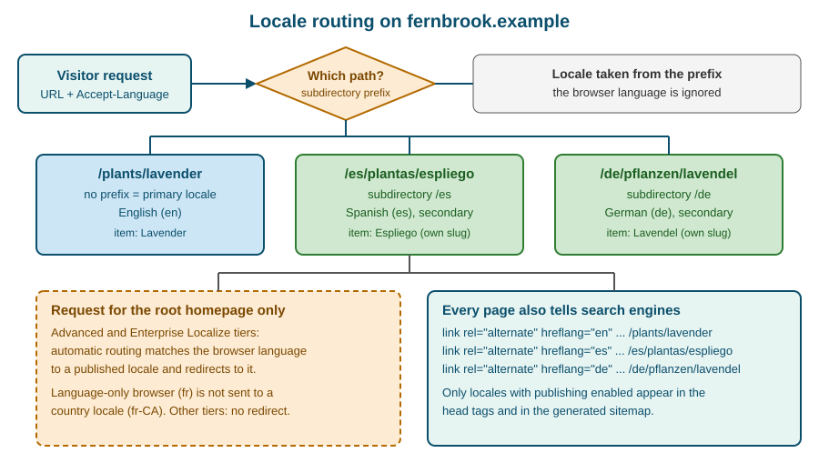

Localization
|
This content was generated with the assistance of AI and should be verified against the official documentation before being relied on in production. |
This page describes Webflow Localization as it was on 2026-10-28, the date on which its facts were checked against the official documentation. Localization is a feature of the Webflow platform and has no version numbers, so everything below is dated. Plans are named by tier only and this page never quotes prices. Publishing a secondary locale needs a paid Site plan and a Localize add-on, in the tiers Localize Essential, Localize Advanced and Localize Enterprise, while the Team workspace plan includes two locales; the tier names and limits are summarized in The Localize tiers and what they unlock, and the Plans, Workspaces, Seats and Roles page explains how Site plans, Workspace plans and add-ons relate. A free preview of Localization, including machine-powered translation and the localization of static pages, CMS content and SEO settings, is part of every Site plan from Starter to Enterprise, so a team can try the workflow before buying anything. Webflow Ecommerce is the one important exclusion: Localization does not support the features of an Ecommerce Site plan, so products, categories and the Ecommerce pages of a shop cannot be localized; see Ecommerce Overview.
The running example is Fernbrook Gardens, the fictitious botanical garden of this sub-section. Its primary language is
English, and the garden adds Spanish (es, subdirectory /es) for the many Spanish-speaking visitors of the region and
German (de, subdirectory /de) for visitors from the partner garden in Hamburg. The Plants collection, the Garden
Journal and the static pages (Home, Visit, Events, About) are localized; the Volunteers area stays English and is not
published in the secondary locales; the seed shop stays English because Ecommerce cannot be localized.
What Localization is and who it is for
Localization is the Webflow feature that lets one site, one Designer project and one CMS, be published in several
languages and regions. It is not a copy of the site per language. The site keeps a single structure of pages, components,
collections and fields; each language is a locale that overlays its own text, its own images, its own SEO settings, its
own style overrides and its own CMS item content on that shared structure. A visitor chooses a locale through a URL
prefix such as /es, and Webflow serves the same page with the Spanish values substituted.
Different people use it differently.
| Person | What they do with Localization |
|---|---|
Site owner |
Decides which languages the garden serves, buys the Localize add-on tier that allows that many locales, and decides when a locale is ready to be public |
Designer |
Builds the page structure once in the primary locale, adapts styles for longer German words or right-to-left scripts, builds the locale switcher and checks each locale at every breakpoint |
Content editor and translator |
Switches the Designer to a locale, edits text, alt text and CMS items in that locale or reviews machine and AI translations; this is described in Localizing pages, styles, assets and alt text and Localizing CMS items |
Marketer |
Localizes page names, slugs, titles, descriptions and Open Graph data, checks hreflang and the sitemap, and watches indexing of each locale |
Developer |
Reads and writes localized content with the Data API (see Data API: Ecommerce and Localization), connects a translation management system, or reads the locale in custom code |
Localization features are available in the Designer. Content editors work with them through the Designer in edit mode, the mode that replaced the legacy Editor; see Content Editing on the Canvas. The legacy Editor never supported localization.
Source: Localization overview.
The Localize tiers and what they unlock
A locale is a billable capability. The Site plan decides whether the site can be published at all; the Localize add-on decides how many locales it can have and which routing and workflow features are present. On 2026-10-28 the tiers are:
| Tier | Locales | What changes |
|---|---|---|
Free preview (every Site plan) |
Localization can be explored; no secondary locale can be published without the add-on |
Machine-powered translation, static page, CMS and SEO localization can be tried in the Designer |
Localize Essential |
Up to 3 locales |
Includes a monthly word allowance for machine translation (10,000 words per locale per month on the pricing page) |
Localize Advanced |
Up to 10 locales |
A larger monthly allowance (50,000 words per locale per month) and automatic domain-level routing |
Localize Enterprise |
A custom number of locales |
Custom allowance, automatic domain-level routing, a custom translation glossary, locale-specific access and the ability to set individual static pages to draft in specific locales |
Team workspace plan |
Two locales included |
The Team plan bundles two locales with the plan itself; more locales need the add-on |
Three consequences follow.
-
The tier sets how many locales a site can have, so a team that plans four languages for the Fernbrook site should check the tier limits before adding the fourth.
-
Adding a locale does not publish it. A locale stays private until publishing is enabled for its subdirectory, so unfinished languages can be built in the background; see Per-locale publishing.
-
The Ecommerce exclusion applies at the plan level, as described in the introduction.
The word allowances are quoted from Webflow’s pricing page and change when Webflow changes its pricing; check the pricing page before sizing a project. Allowances apply to the built-in machine and AI translation only and do not limit manual translation or a connected translation management system.
Locales, languages and subdirectories
A locale is a language plus an optional country, with a display name, an optional display image and a subdirectory. The Localize panel of the Designer, under Locales, lists them and starts the Add new locale flow.
| Setting | Meaning |
|---|---|
Language |
The language of the locale, for example Spanish or German; it sets the language code used by |
Country (optional) |
A region such as Mexico; it produces a regional code like |
Display name |
The text the locale switcher shows; it defaults to the language and can be edited, for example |
Display image |
An optional flag or icon the locale switcher can show |
Subdirectory |
The URL path segment that selects the locale, for example |
The primary locale is the site’s default language. It is chosen when Localization is set up, it cannot be changed later
and a secondary locale cannot be promoted to primary. This is the single most important decision of a localized project:
the primary locale is where the structure, the slugs and the fallback content live. Fernbrook’s primary locale is English
without a subdirectory, so the existing English URLs, such as /plants/lavender, keep working and need no redirect.
Subdirectory guidelines:
-
Choose short, stable subdirectories that follow the language code, such as
/esand/de; use a regional code such as/es-mxonly when a second Spanish locale exists. -
Do not choose a subdirectory that equals an existing static page slug, a folder or a Collection slug. A site that has a Collection with the slug
deor a page/eswould have two things claiming the same path. -
A locale that is edited in the Designer but not published has no public URL, so a typed
/dereturns the site’s 404 page until publishing is enabled.
Webflow serves locales through subdirectories of the same domain, not through separate domains or subdomains. The effect for search is that all locales share the domain’s authority and appear in one Search Console property, and the effect for operations is that one SSL certificate and one set of DNS records cover every language.
Source: Manage your site’s locales.
Locale routing
Routing is how a request ends up in the right locale. There are two mechanisms, and the second is narrower than most people expect.

Explicit routing by subdirectory
Every URL carries its locale. A request without a prefix is served in the primary locale; a request starting with /es or
/de is served in that locale. The browser’s language, the visitor’s location and any cookie are ignored for these
URLs. This makes pages predictable: a link to /de/pflanzen/lavendel always shows the German page, can be indexed, shared
and cached, and is the same for every visitor.
Automatic routing of the root homepage
On the Advanced and Enterprise Localize tiers, Webflow can automatically route visitors by language. It applies only to
visitors who land on the root homepage (/). The browser’s language preference is matched against the published locales
and the visitor is redirected to the matching one. Four details matter:
-
A deep link, for example
/plants/lavender, is never rerouted, so shared links stay stable. -
A browser configured for a language only, for example French, is not routed to a country locale such as French (Canada). If a site wants regional routing, it should publish the language-only locale as well.
-
If no published locale matches, the visitor stays on the primary locale.
-
On tiers without automatic routing, every visitor lands on the primary locale and has to use the locale switcher.
Automatic routing therefore never replaces a visible switcher. A visitor from Madrid whose browser is set to English must still be able to choose Spanish, and a search crawler that does not send a language is routed nowhere.
The locale switcher
A switcher is built in the Designer with a Dropdown element that contains the Locales list element. The Locales list is a
collection-like list that has one item per published locale and exposes the locale’s display name, display image and link.
Because it is built from the live locale list, adding the German locale later adds a link automatically. Place it in the
SiteHeader component so every page has it.
The links inside the list point to the same page in another locale. Internal links created with the Page or Collection page link types are localized automatically: on the Spanish site a link to the Visit page points to the Spanish Visit page. Links typed as plain URLs, or entered in rich text as raw addresses, are not rewritten and keep pointing wherever they were typed.
Localizing pages, styles, assets and alt text
Secondary locales inherit the primary locale until they are overridden. Switching the Designer to the Spanish locale with the Locale view shows the English content in Spanish context; nothing is duplicated. As soon as a value is edited in the Spanish view, it becomes a Spanish override; resetting the override returns the locale to inheritance.
The inheritance model gives the rule that governs the whole feature: structure is edited in the primary locale; content is edited in each locale. Adding an element, changing a class, rearranging a section or creating a page happens once in the primary locale and appears everywhere. Text, links, images, alt text, SEO fields and (optionally) styles are edited per locale.
Text and links
Every text block, heading, button label, form label and placeholder can be translated in the Locale view. Text that is bound to a CMS field is not edited on the page; it is edited on the CMS item. Three tools translate in bulk:
-
Machine translation built into Localize, which translates the content of a locale in one action and draws on the monthly word allowance;
-
AI translation, with tone and formality that can be set per target language, and exclusion rules that keep content such as SKUs, reference codes or legal text in the primary language (excluded content does not use the allowance);
-
a translation app from the Marketplace or a translation management system connected through the Localize APIs.
The newer agentic translation can run once or continuously. Continuous mode keeps retranslating as the primary locale changes and can replace translations that people wrote, so use the one-time mode when a team intends to edit the translations by hand afterwards.
Machine translation is a draft, not a result. Fernbrook’s plant care notes contain Latin names that must not change, units that differ between regions and words such as bloom that a generic engine renders as something else; a human reviewer for each language is part of the workflow.
Pages and their settings
Page settings are localized per locale: the page name, the slug, the SEO title and meta description, the Open Graph title,
description and image, the sitemap inclusion and the custom code in the head and before the body. A localized slug is what
makes /es/plantas possible while the primary page stays /plants. Always translate the page name as well as the slug,
because the name appears in the Pages panel for the reviewer and in the breadcrumb element.
Static pages can be drafted per locale on Enterprise: the page exists in the primary and in one secondary locale but is not published in the other. Drafting a localized page does not remove the links that point to it, so navigation that is shared across locales can send a visitor to a 404. Review navigation and internal links before publishing a locale with a missing page.
Localized styles
By default every locale uses the same classes and values. Because languages differ in length, Webflow also lets a designer
localize styles: a style property, for example font-size, letter-spacing, padding, display or flex-direction,
can be given a different value in one locale. The override applies only when the page is served in that locale and is
marked in the Style panel. A German heading, which is often longer than the English one, can then use a smaller
font size or a different wrap without affecting the English site.
The generated CSS keeps the locale override under an attribute selector on the root element, so the cascade stays ordinary CSS. A simplified view of the output for a heading that is smaller in German is shown below.
/* base value, applies to every locale */
.u-heading-xl {
font-size: 56px;
line-height: 1.1;
}
/* German override, applies when the page is served in the de locale */
html[lang="de"] .u-heading-xl {
font-size: 48px;
}
/* small screens keep the same ordering: base, then breakpoint, then locale */
@media screen and (max-width: 479px) {
html[lang="de"] .u-heading-xl {
font-size: 34px;
}
}The exact selector Webflow emits is an implementation detail and can change; the example shows the principle that a locale override is an ordinary, more specific CSS rule layered on the base style. Localized styles are available to all customers with Localization.
Source: Localize content and styles.
Assets and alt text
Images, videos and documents can be replaced per locale. An image that contains text, for example a poster that says "Spring Plant Sale", must be replaced with a Spanish and a German version; an image with no text can be shared. Alt text is translated with the same workflow as other text, and a locale without its own alt text shows the primary locale’s alt text until it is overridden. This inheritance means no locale is ever left with an empty alt attribute by accident, but it also means that untranslated alt text silently stays in English for a screen-reader user of the Spanish site. Add alt-text review to the checklist for every locale; see Images and Assets and Accessibility.
For the Fernbrook plant photographs the correct approach is to keep one asset, translate its alt text per locale and
translate the visible caption in the CMS item. The file name is not localized, so use neutral file names such as
lavender-01.jpg rather than words in one language.
Components and slots
Components are structural, so their elements are edited in the primary locale. The text inside a component instance, the
content of its slots and its prop values can be localized per locale, which lets the PlantCard show Compact and
Feature variants in all languages while each language supplies its own text. A component-level text that is not exposed
as a prop is translated inside the component and is therefore shared by every instance, which is correct for a fixed label
such as "Zone" and wrong for text that must differ per instance. Expose the latter as a prop, as described in
Components, Props, Slots and Variants.
Localizing CMS items
The CMS follows the same model as pages: the structure is shared and the content is per locale. A collection has one definition, with fields, validations and a template page, and its items exist once per locale.
Shared structure, per-locale items
When Localization is enabled, every item of every collection exists in each locale. The item of the primary locale is the parent; the items of the secondary locales are linked to it and start by inheriting its values. In the Locale view the editor chooses a locale, and the CMS panel then shows the item with the values of that locale.
| Aspect | Behaviour |
|---|---|
Fields and validations |
Defined once, in the primary locale; a field added in the primary locale appears in every locale |
Field values |
Inherited until overridden in the locale; text, rich text, image, alt text, link and option fields can be localized |
Name and slug |
Both can be translated; the slug is what gives |
Draft and published state |
Set per locale; an item can be live in German and draft in Spanish |
Reference fields |
Point to an item; in a locale, the reference resolves to the same item’s version in that locale |
Template page |
One template page; it renders the locale’s item fields in the locale’s URL space |
Fernbrook’s Plants collection shows what that means. The Latin name field is not translated, so it is the same value in
every locale (the localization of a field can be switched off per locale so that the inherited value is retained). The
name, care notes and alt text fields are translated. The hardiness zone reference points to the Zones item, and
the Spanish page shows the Spanish name of the zone because the reference resolves to the Spanish version of the item. The
bloom months option field has option names, and they are translated at the field level so the Spanish page shows the
Spanish month names.
Collection lists in a locale
A Collection list or a Collection template page in a locale shows the items of that locale. A Collection list can also be set to show the primary locale’s items regardless of the page’s locale, which is useful when a collection is not translated yet: a German site with an untranslated Events collection can still show the English events instead of an empty section. Decide this consciously for each list, because the fallback shows content in the wrong language. See Collection Lists and Collection Template Pages.
Creating, editing and deleting
-
Creating an item always happens in the primary locale; the item is then created in every locale.
-
Editing content happens in the locale being translated.
-
Duplicating an item in the primary locale creates a new item set for all locales.
-
Deleting an item from a secondary locale removes it from that locale only. This is how an item that is relevant to one locale only, for example an event held in Hamburg, is hidden from the Spanish site.
-
Deleting an item from the primary locale deletes it from all secondary locales as well. To hide an item from the primary locale only, set it to Draft in the primary locale instead of deleting it.
-
Treat deletion in a secondary locale as final and rely on the backups described in Backups and Recovery.
Plants / Lavender (Item ID 65f0c2...a1)
en Lavender /plants/lavender published
es Espliego /es/plantas/espliego published
de Lavendel /de/pflanzen/lavendel draft
Delete in "de" -> removes only the German item
Delete in "en" -> removes the English, Spanish and German itemsSource: Localize Collection content.
Slugs and uniqueness
Slugs must be unique within a collection in a locale, not across locales. lavender in English and espliego in Spanish
are different URLs under different prefixes. If two languages share a word, for example rosa, the two URLs can use the
same slug because they live under different subdirectories. Keep the primary slug stable after the site is public, because
it is the identity from which the localized items are created, and redirects from an old slug need one rule per locale; see
Redirects and Site Migration.
Import, export and the API
The CSV tools work on one locale at a time: the editor chooses the locale in the Locale view and the CSV contains the
values of that locale; the Item ID column is what links the rows of different locales, so it must be preserved. The Data
API addresses locales with locale IDs: a site lists its locales with an ID for each, an item has both a cmsLocaleId and
the item ID, and a request names the locale it reads or writes. See CSV Import
and Export and Data API: Ecommerce and Localization. A sync
script such as fernbrook-sync therefore creates the English item first and then updates the Spanish and German items by
their locale IDs.
Machine and AI translation in practice
Webflow offers several translation paths. They can be mixed per locale.
| Path | How it works | Typical use at Fernbrook |
|---|---|---|
Manual |
An editor types the translation in the Locale view |
Legal text and the garden’s welcome message |
Machine translation |
Built into Localize; translates a locale’s content in one action and counts against the monthly allowance |
First pass of the Spanish site |
AI translation |
Triggered by the editor; tone and formality are set per language and exclusion rules protect fixed content |
Journal posts, with a reviewer |
Agentic translation |
Can run once or continuously as the primary content changes; continuous mode can overwrite human edits |
Only for locales that nobody edits by hand |
Translation app or TMS |
A Marketplace app or a translation management system connected through the Localize APIs |
A professional translation vendor for the German site |
Practical rules:
-
Finish the primary locale first. Machine translation of content that is still changing wastes words from the allowance.
-
Set the exclusion rules before translating, so Latin names, SKUs and codes are not touched.
-
Translate in batches by page or collection and review before enabling publishing for the locale.
-
Wait for translations to finish processing before reviewing; reviewing a half-translated page leads to false fixes.
-
Check for untranslated text and for unintended fallbacks to the primary locale on a staging or preview URL.
-
A custom translation glossary, which fixes how terms are translated, is an Enterprise feature; on other tiers keep a glossary in the team’s documentation and use the exclusion rules.
The allowance is a quota, so plan for it: ten thousand words per month for a locale on the Essential tier is a few dozen Journal posts but not a whole catalog in one month. A site that exceeds its allowance can continue to translate manually or connect a TMS; there is no overage fee quoted on the pricing page, so check it before a large import.
Right-to-left languages
For Arabic, Persian, Hebrew, Urdu and Yiddish locales, Webflow automatically applies right-to-left display to the published site, even before any text is translated. The root element of such a page carries the direction, and the browser mirrors the inline direction of text, the order of flex rows and the sides of padding written as logical properties.
<html dir="rtl" lang="he">
<body>
<header class="site-header">
<!-- the flex row of the header is mirrored by the browser -->
</header>
<p dir="ltr">Lavandula angustifolia</p> <!-- Latin name kept left-to-right -->
</body>
</html>To opt an element out of the automatic direction, give it a custom dir attribute with the value ltr or auto. This is
the right way to keep the Latin plant names of the Fernbrook collection readable in a Hebrew or Arabic page. Fernbrook does
not publish an RTL locale, but the checklist for one is short: review all mirrored layouts, replace directional icons such
as arrows, check that absolute positions use left and right correctly, and test forms. Custom attributes are described
in Custom Attributes and JavaScript.
Source: Localization overview.
hreflang, the sitemap and localized SEO
Search engines need to know that /plants/lavender, /es/plantas/espliego and /de/pflanzen/lavendel are the same page
in three languages. The mechanism is hreflang, and Webflow generates it.
hreflang in the page head
With automatic hreflang enabled in Site settings > Localization, every published page carries link elements that list
its variants, including itself, in the head.
<link rel="alternate" hreflang="en" href="https://www.fernbrook.example/plants/lavender">
<link rel="alternate" hreflang="es" href="https://www.fernbrook.example/es/plantas/espliego">
<link rel="alternate" hreflang="de" href="https://www.fernbrook.example/de/pflanzen/lavendel">
<link rel="alternate" hreflang="x-default" href="https://www.fernbrook.example/plants/lavender">
<link rel="canonical" href="https://www.fernbrook.example/es/plantas/espliego">The last line is the canonical of the Spanish page: each locale’s page is canonical to itself, never to the primary one. Only locales with publishing enabled are listed, so enabling the German subdirectory adds the German line to every page that has a German variant at the next publish.
Source: Localized SEO and locale routing.
hreflang in the sitemap
When Webflow generates the sitemap, it includes the same alternate entries for static and dynamic pages. Search engines need one signal, either the page-level tags or the sitemap entries, though both can be used.
<url>
<loc>https://www.fernbrook.example/plants/lavender</loc>
<xhtml:link rel="alternate" hreflang="es" href="https://www.fernbrook.example/es/plantas/espliego"/>
<xhtml:link rel="alternate" hreflang="de" href="https://www.fernbrook.example/de/pflanzen/lavendel"/>
</url>A hand-written custom sitemap has to carry the alternates by hand. Whichever form is used, an entry for a page that is drafted or not published in a locale is a broken promise, so check the sitemap after publishing.
Source: Localized SEO and locale routing.
Language codes and x-default
-
Leave the site-level language code empty on a multilingual site; the site-level value overrides the codes of the locales and would label every page with one language.
-
x-defaultpoints to the version for visitors whose language matches none of the others, normally the primary locale. -
If a CMS item is unpublished in the primary locale but published in two or more other locales, Webflow cannot choose a fallback and each version gets its own
x-default. Keep a published default version in the primary locale to avoid this.
Localized metadata
Page title, description, Open Graph tags and the structured data of each locale should be written in that locale, not copied. A Spanish page with an English title is a common defect in machine-translated sites. The cross-cutting practices of SEO, including structured data and answer-engine optimization, are on SEO and AEO; JSON-LD embedded in a template page should use the locale’s name and description fields.
After launch, submit the sitemap, check indexing of each locale in Google Search Console and add separate 301 redirect rules for localized paths if old URLs existed.
Per-locale publishing
Localization changes what publish means. The publish dialog lists the site’s domains and, for each, the locales that will be published.
-
Each locale has publishing enabled or disabled. A disabled locale is not served, not listed in the sitemap, not in hreflang and not in the locale switcher.
-
A normal site publish publishes every enabled locale together, so a translator who saves Spanish text and a designer who publishes the English site publish both.
-
Webflow documents publishing at the level of a page and of a CMS item, and localized pages and items follow the same rule: publishing a page publishes all its locales, while an item can be draft in a locale and live in another.
-
Locale-specific access on eligible Enterprise sites restricts who can edit a locale; it does not restrict who can publish the site.
A reasonable launch order for Fernbrook is: build and translate Spanish, keep it disabled, review it on the webflow.io staging domain, then enable the subdirectory and publish. Details of staging, scheduled publishing and the publish dialog are on Publishing and Scheduling and Domains, Hosting and Publishing Options.
Interactions, code export and other limits
| Area | Limit or behaviour on 2026-10-28 |
|---|---|
Ecommerce |
Products, categories and Ecommerce pages cannot be localized |
Classic Interactions |
Classic Interactions defined on the primary locale run in the secondary locales; building new interactions on the newer GSAP-powered engine inside a secondary locale is not yet possible, as noted in Classic Interactions and Interactions with GSAP |
Code export |
The code export contains the primary content; it does not give a multi-language static site, so a localized site cannot be moved out of Webflow by export alone; see Code Export and Portability |
DevLink |
Components exported with DevLink carry their primary content; texts for other languages must be supplied by the host application |
Localized pages with Page branches |
Check the current behaviour before relying on a branch to stage a translation; see Page Branching, Releases and Approvals |
Primary locale |
Fixed after setup; there is no way to swap languages later |
Structure |
Elements, classes and fields are changed in the primary locale only |
Static page drafting per locale |
Enterprise only |
Custom translation glossary |
Enterprise only |
Automatic routing |
Advanced and Enterprise tiers, root homepage only |
Locale-aware custom code is possible. The lang attribute of the root element tells scripts which locale is active, which
is how Fernbrook’s script that formats ticket prices chooses a number format.
<script>
// Format a number with the locale of the page, falling back to English
const lang = document.documentElement.lang || "en";
const formatter = new Intl.NumberFormat(lang);
document.querySelectorAll("[data-count]").forEach((el) => {
el.textContent = formatter.format(Number(el.dataset.count));
});
</script>Source: MDN: Intl.NumberFormat. For the way Webflow includes custom code, see Custom Code in the Head, Footer and Embeds.
Common mistakes and pitfalls
| Mistake | Consequence and remedy |
|---|---|
Choosing the wrong primary locale |
It cannot be changed; decide before adding the first secondary locale |
Subdirectory that collides with a page or Collection slug |
Two things claim one path; pick a prefix that no page uses |
Typing links as plain URLs in rich text |
They are not localized; use the Page or Collection page link types |
Continuous agentic translation over hand-edited text |
Human translations are replaced; use one-time mode |
Machine translation published unreviewed |
Wrong terminology, mistranslated Latin names; review before enabling publishing |
Expecting automatic routing on deep links |
It applies only to the root homepage |
Language-only browser, country locale |
French is not routed to French (Canada); publish the language-only locale as well |
Deleting a primary item to hide it |
It deletes the item in every locale; use Draft instead |
Site-level language code set |
Overrides the locales' codes; leave it empty |
Forgetting that a drafted localized page is still linked |
Visitors reach a 404; review navigation |
Untranslated alt text |
Screen-reader users hear English on the Spanish site; review per locale |
Images that contain text |
Replace the image per locale |
Translating the slug in the primary locale after launch |
Breaks indexed URLs; redirect each locale |
Expecting the shop to be localized |
Ecommerce cannot be localized; plan separate handling |
Security and privacy
-
Who can see an unpublished locale. An unpublished locale is not served publicly, but its content is visible to everyone with Designer or Workspace access. Treat unfinished translations of confidential text accordingly.
-
Locale-specific access. On eligible Enterprise sites, access can be limited to the people who edit a locale. It controls editing, not publishing, so a contractor given access to the German locale should still not be given publishing rights beyond what the roles page in Plans, Workspaces, Seats and Roles allows.
-
Third-party translation. Machine, AI and TMS translation send site text to a service. Do not send personal data, internal notes or unreleased commercial text; use exclusion rules for fixed content, and check the data-processing terms of any connected vendor.
-
Redirects based on language. Automatic routing reads the browser language header only to choose a locale; it does not need cookies or personal data, but a cookie-consent policy should still cover any custom locale-remembering script.
-
Password-protected pages. A page protected by the password feature stays protected in each locale that publishes it; Fernbrook leaves the Volunteers area unpublished in Spanish and German rather than translating it.
History and where older material is wrong
Since its introduction Localization has gained localized styles and components, Enterprise-oriented controls such as locale-specific access and a translation glossary, tiered Localize add-ons with a monthly word allowance on the add-on cards, and AI and agentic translation. The details of each change are tracked on Product Changes and Deprecations.
The requester-provided book, Webflow by Example, predates Localization, so its chapters on the CMS describe a single-language site. Two statements in older material therefore no longer hold. First, multilingual sites were once built with a separate Webflow project per language or with a third-party translation overlay such as a proxy service; Webflow’s built-in Localization replaces that approach for new work, with one project, one CMS and subdirectory routing. Second, the book describes the Editor for content changes, which never supported localization and was retired in 2026; localized content is edited in the Designer in edit mode. Where the book and the official documentation differ, this sub-section follows the official documentation. See Where Older Books and Tutorials Are Outdated.
A launch checklist for Fernbrook Gardens
-
Decide the primary locale (English) and the locale list (Spanish, German); confirm the tier allows three locales in total and that the Ecommerce shop is out of scope.
-
Pick subdirectories
/esand/deand check that no page or Collection uses those slugs. -
Finish page structure, components and collection fields in the primary locale.
-
Add the locales; keep both disabled.
-
Set exclusion rules for Latin names, SKUs and codes; run machine translation of the static pages.
-
Translate the Plants, Zones, Events and Journal items, with a reviewer per language.
-
Localize page names, slugs, SEO titles, descriptions and Open Graph data.
-
Replace images that contain text; translate alt text.
-
Adapt styles for long German words; test every breakpoint.
-
Build the locale switcher in
SiteHeader; use Page and Collection page links for navigation. -
Confirm automatic hreflang is on and the site-level language code is empty.
-
Review on the staging domain; check for untranslated text and fallbacks.
-
Enable publishing for one locale at a time, publish, and verify URLs, forms and key journeys on the production domain.
-
Submit the sitemap and watch indexing per locale; add redirects for localized legacy URLs.
Where to go next
-
Collections and Field Types for the fields that can be localized.
-
SEO and AEO for metadata and structured data.
-
Data API: Ecommerce and Localization to automate localized content.
-
Publishing and Scheduling for the publish dialog and scheduling.